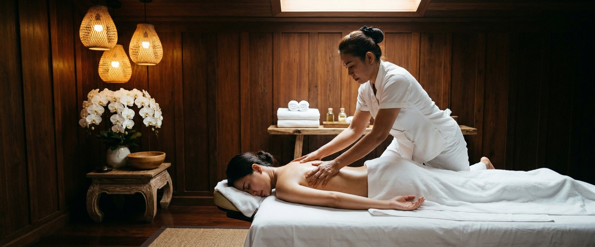
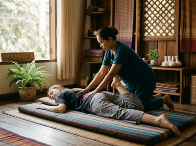

Phuket Thai Massage on Glasgow's city centre has a clear appeal.

It sits a minute's walk from Glasgow Central station, its branding leans into an immersive, atmospheric experience, and the therapists come with a personal story that gives the business genuine character. If you searched for Phuket Thai Massage and landed here, you were probably looking for authentic Thai massage close to the city centre.
What may have sent you searching further is this: Phuket Thai Massage does not display pricing on its website. There is no online booking system. The only way to arrange an appointment is by phone. If you wanted to check availability and confirm a session without making a call, that option simply is not there. No treatment durations are listed, and there are no customer reviews or ratings visible to help you decide.

Serendipity Massage Therapy & Wellness is a professional team practice on Hope Street in Glasgow city centre. Treatments are built around techniques developed by head therapist Jariya Malone. These draw from traditional Thai massage and are adapted for precise, consistent results across the whole team. This is not a sole trader or a rotating roster of unfamiliar staff. Every session is delivered to the same standard, by therapists trained in the same approach.
Serendipity offers Thai massage, Thai oil massage, Swedish massage, sports massage, hot stone massage, and aromatherapy massage. Pricing is clear before you book. Appointments can be confirmed online without a phone call. Book your session today at https://serendipitymassage.co.uk/book-now/
Phuket Thai Massage does not list prices or treatment durations on its website. Serendipity publishes this information so you can decide before you commit. Phuket Thai Massage requires a phone call to book. Serendipity offers online booking at any time. Phuket Thai Massage has no visible customer reviews or ratings on its website. These are practical gaps that affect whether you can plan a session with confidence.
Where Phuket Thai Massage leads: it is one minute from Glasgow Central station. That is a real advantage if you are arriving by train from south of the city or connecting via the low-level rail network. Its early bird pricing also offers good value for clients who can book ahead and attend morning sessions. If that fits your schedule, it is worth knowing.
Serendipity is a strong fit for people working around Blythswood Square, St Vincent Street, and the financial district. If you want to book a same-day session without picking up the phone, this is straightforward to do. It also suits anyone who wants to compare treatments and prices before committing. Regular clients who value the same quality each visit will find the team approach reassuring. First-timers who want to know what a session involves — and what it costs — before they arrive will have everything they need online. If you are coming from the West End, the north side of the city, or arriving via Buchanan Street or St Enoch subway, Hope Street is easy to reach on foot.
From Phuket Thai Massage near Glasgow Central station, the walk to Serendipity on Hope Street takes around ten to twelve minutes. Head north on Union Street from the station. Continue past Argyle Street and follow Union Street toward the city's commercial core. Turn left onto Ingram Street, then head west to Queen Street. Go north on Queen Street, then turn left onto West George Street. Follow West George Street west past the junction with Nelson Mandela Place. Continue to the top where it meets Hope Street and turn left. Serendipity is at 93 Hope Street, inside Central Chambers on the first floor, Suite 50.
Get driving directions to Serendipity Massage Therapy & Wellness:
Serendipity Massage Therapy & Wellness — Floor 1, Suite 50, Central Chambers, 93 Hope Street, Glasgow G2 6LD
Book online now at https://serendipitymassage.co.uk/book-now/ and confirm your appointment without a phone call, at any time that suits you.
Yes. Serendipity offers online booking at https://serendipitymassage.co.uk/book-now/. You can confirm your appointment at any time without needing to call. Phuket Thai Massage does not have an online booking system and lists only a phone number for reservations.
Serendipity is a team practice. Every therapist is trained to a consistent standard using techniques developed by head therapist Jariya Malone. This means the quality of your session does not depend on one person being available. Phuket Thai Massage does not provide information about therapist qualifications or training on its website.
Serendipity Massage Therapy & Wellness is at Floor 1, Suite 50, Central Chambers, 93 Hope Street, Glasgow G2 6LD. It is within walking distance of Buchanan Street and St Enoch subway stations. It is also easy to reach from the offices around Blythswood Square and the financial district. From Glasgow Central station, the walk takes around ten to twelve minutes.
Serendipity offers Thai massage, Thai oil massage, Swedish massage, sports massage, hot stone massage, and aromatherapy massage. Treatments are available at various durations and can be selected and booked through the website. Full treatment details are at https://serendipitymassage.co.uk
Yes. Serendipity lists pricing on its website so you can review your options before committing. Phuket Thai Massage does not display any pricing on its website. This means you cannot compare costs or plan your visit without making a phone call first.
Serendipity has an established presence in Glasgow city centre with a long-term client base across the professional and residential communities of the city. Phuket Thai Massage does not display customer reviews or ratings on its website. There is no visible social proof to review before booking with them.
Book your appointment online at https://serendipitymassage.co.uk/book-now/ and secure your session at Serendipity Massage Therapy & Wellness today.